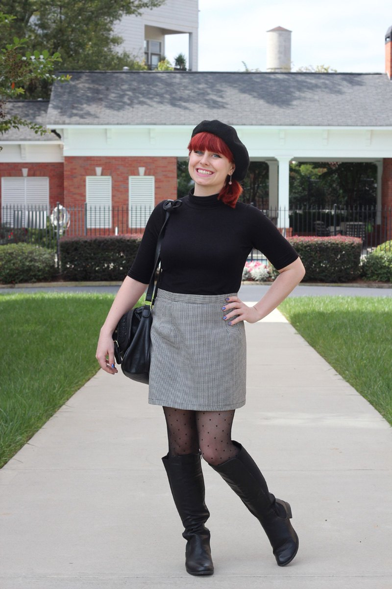
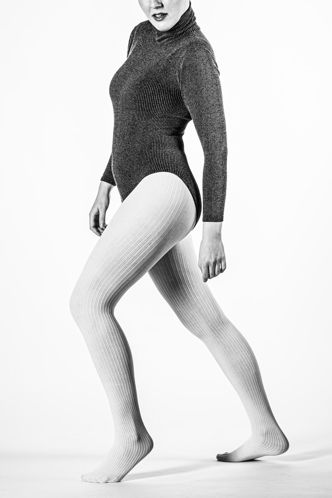
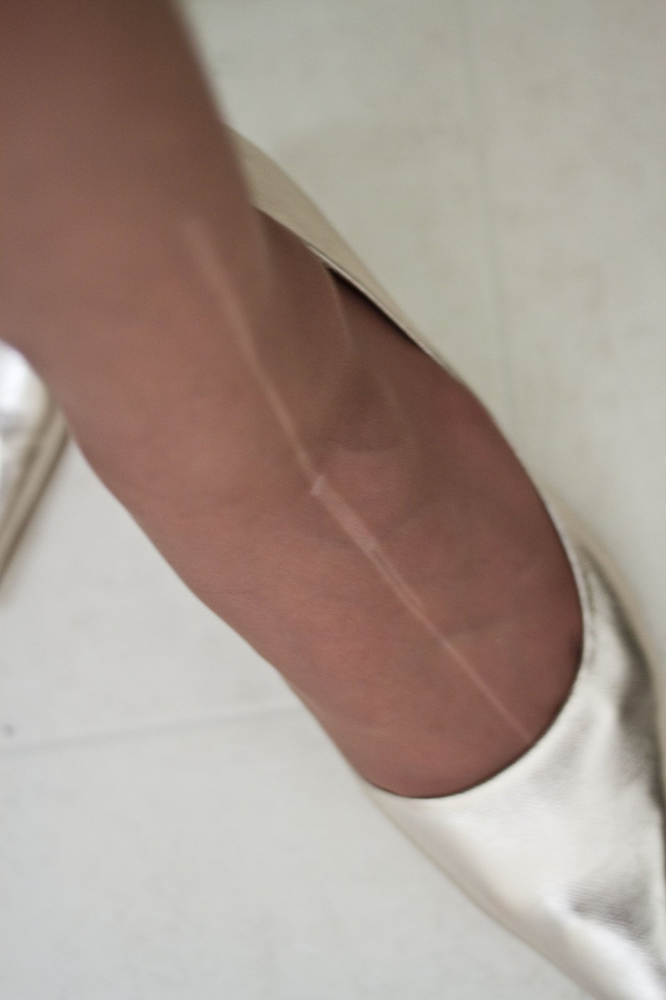
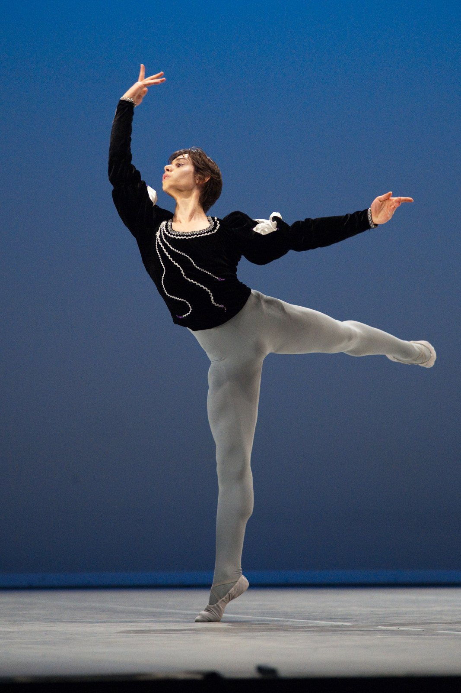

Wolford и инженерия второй кожи
От производства чулок в Брегенце до Pure 50 и современного skinwear.
Читать биографиюМода · Технологии · Культура
Истории мировых компаний, точные характеристики моделей, реальные фотографии и понятные ответы без рекламы, стыда и стереотипов.

Новые лонгриды
Разбираем крой, производство, культурную историю и повседневные сценарии. Каждый материал ведёт к более подробному справочнику.

От производства чулок в Брегенце до Pure 50 и современного skinwear.
Читать биографию
Петли, нить, посадка и уход влияют на износ не меньше, чем плотность.
Открыть энциклопедию
Специализированный крой, спорт, исторический костюм и выбор размера.
Открыть спецпроектФилософия ДЕНЬЕ
Хорошая пара не меняет человека. Она позволяет быть собой.
Компании и технологии
Читайте подробную биографию, хронологию и таблицу моделей. Архивные и неподтверждённые записи отмечены отдельно.
Новые главы и инструменты
Шесть рабочих направлений для исследования, сравнения, подбора и сохранения вашего выбора.
Отличия, GSM, спорт, прозрачность и мужской крой.
Открыть гид Деловой спецпроектВосемь бизнес-кейсов с финансовыми показателями и фотографиями.
Читать кейсы КомпараторДве конкретные модели рядом по DEN, назначению и свойствам.
Сравнить Личный инструментИзбранное, подбор образа, размер Snag и стоимость носки.
Открыть гардероб Цвет и посадкаНаправления Nude и диагностика проблем посадки.
Выбрать оттенок Весь порталСтатьи, бренды, модели, люди и фотографии в одном запросе.
Найти материалРеальная фотография
Никаких выдуманных подписей с названиями брендов. У каждого снимка указаны автор, источник, лицензия и точное описание видимого содержания.
Практическая библиотека
Справочные материалы помогают сравнить изделия по задаче, а не по громкости рекламного обещания.
Диапазоны плотности, сезонность и разница между внешним видом и прочностью.
Изучить DEN 02 · КонструкцияЛастовица, плоский шов, открытый мысок и анатомическая верхняя часть.
Разобрать крой 03 · РазмерSnag, Glamory, Hanes и другие марки с разными системами посадки.
Сравнить подходы 04 · КультураНейлон, эластан, мини мода и развитие мужского и унисекс гардероба.
Открыть хроникуРедакционный принцип
Мы не присваиваем моделям выдуманные оценки, не обещаем вечную носкость и не называем фотографию конкретным брендом без подтверждения. Если данных нет, в каталоге честно написано «не заявлено».
Прочитать правила использования материалов